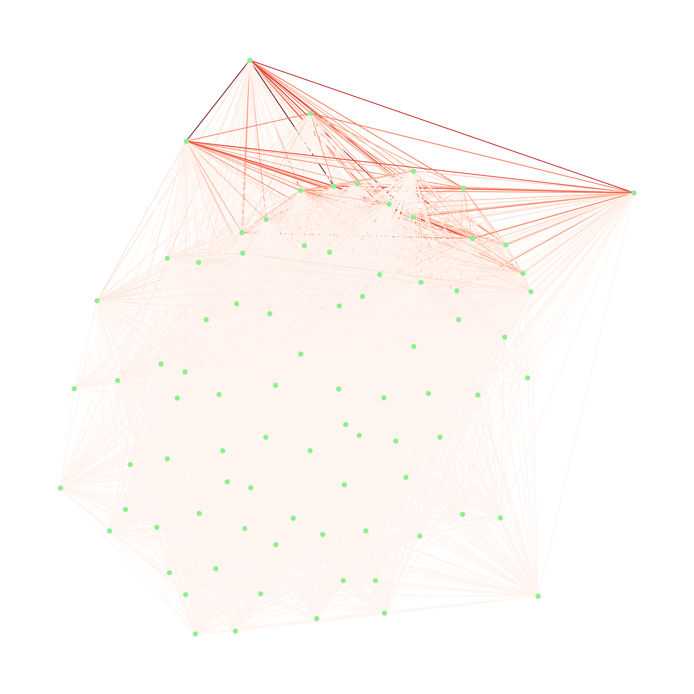
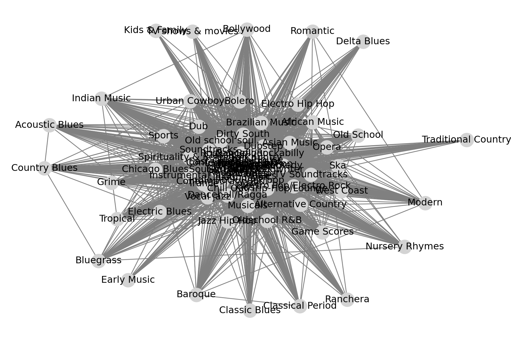
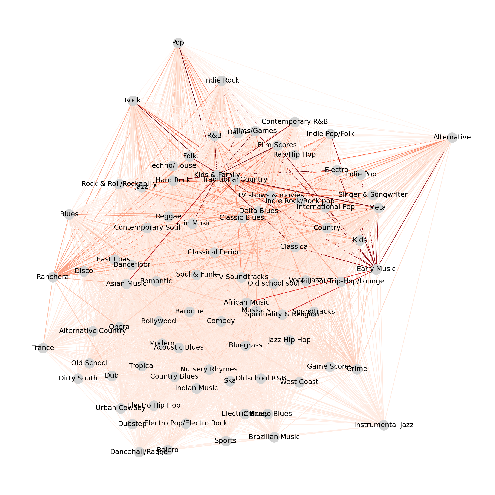
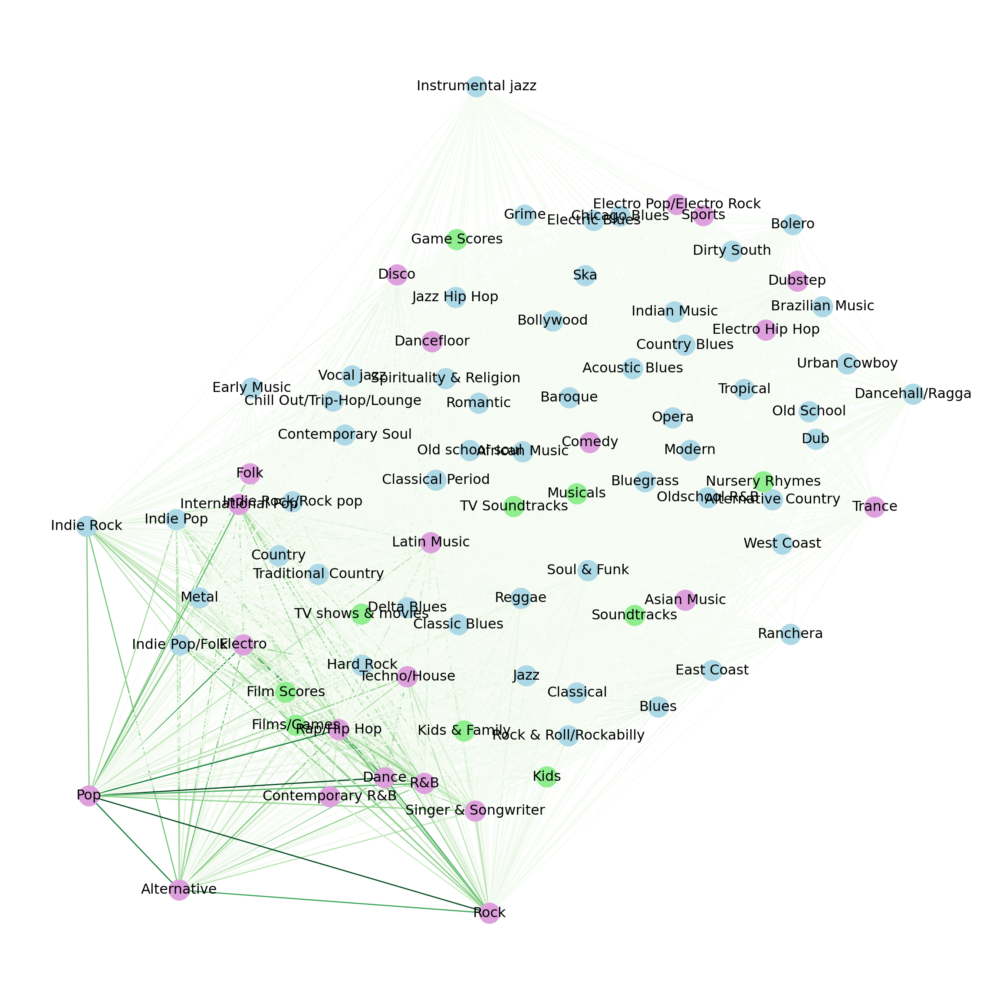
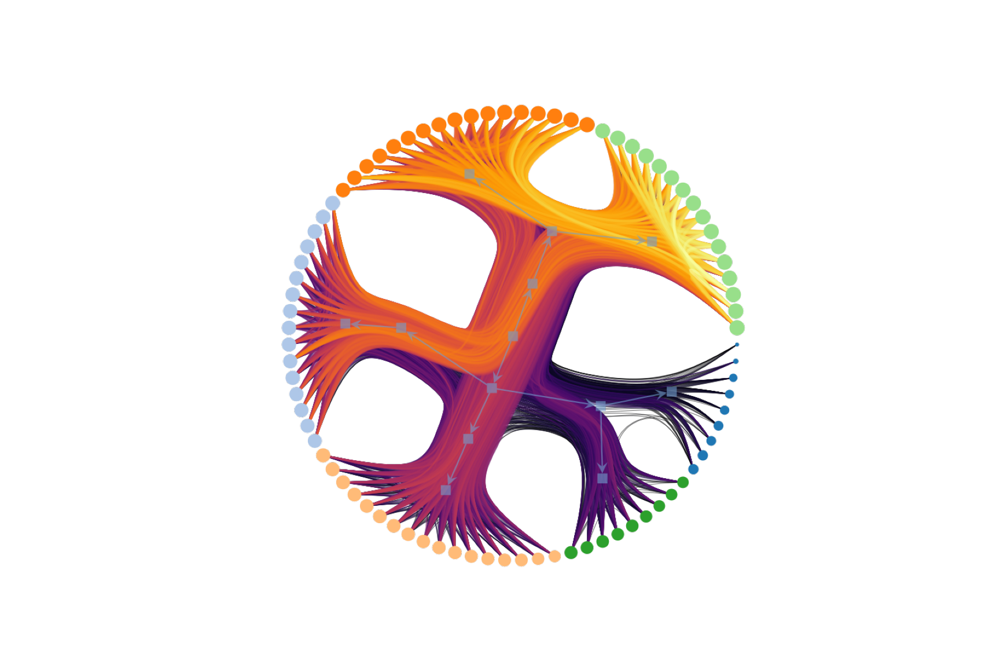
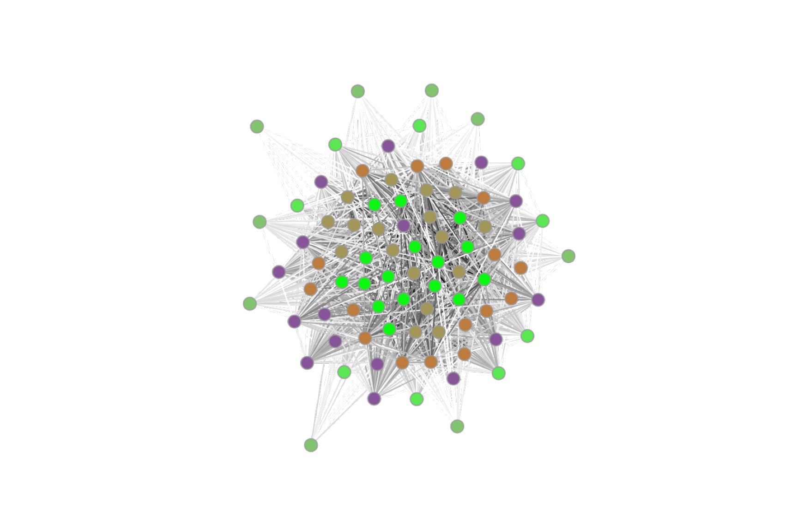
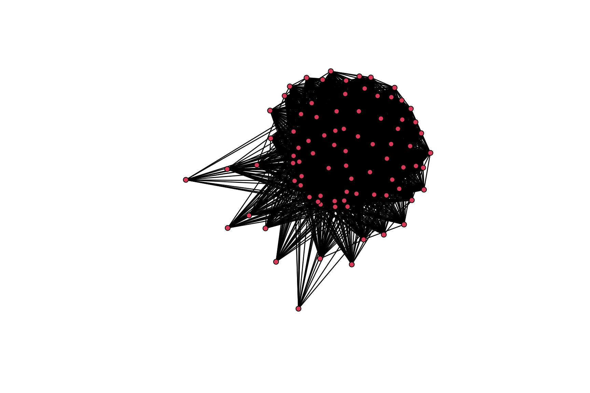

Code
library(reticulate)
#use_condaenv("smm638", required = TRUE)
library(car)
library(sna)
library(ergm)
library(dplyr)
library(tidyr)library(reticulate)
#use_condaenv("smm638", required = TRUE)
library(car)
library(sna)
library(ergm)
library(dplyr)
library(tidyr)import pandas as pd
import networkx as nx
from networkx.algorithms import bipartite as bp
import matplotlib.pyplot as plt
import numpy as np
import itertools
from IPython.display import Image
import matplotlib
from graph_tool.all import *
import random# load data
fr = pd.read_csv('/Users/adam/Desktop/Bayes/Class/Network_Analytics/SMM638/FCP/deezer_clean_data/HR_edges.csv')
# data preview
fr.head() node_1 node_2
0 0 4076
1 0 29861
2 0 53717
3 0 23820
4 0 39945import json
with open('/Users/adam/Desktop/Bayes/Class/Network_Analytics/SMM638/FCP/deezer_clean_data/HR_genres.json', 'r') as f:
pr_json = json.load(f)
pr_json["11542"]['Indie Rock', 'Indie Pop/Folk', 'International Pop', 'Rap/Hip Hop', 'Pop', 'Rock', 'Indie Pop', 'Alternative']pr = pd.json_normalize(pr_json).T
pr.rename({0: 'genres'}, axis=1, inplace=True)
pr.head() genres
13357 [Pop]
11542 [Indie Rock, Indie Pop/Folk, International Pop...
11543 [Dance, Pop, Rock]
11540 [International Pop, Jazz, Pop]
11541 [Rap/Hip Hop]pr_original = prpr = pr.explode('genres')
pr.reset_index(inplace=True)
pr.rename({'index': 'user_id'}, axis=1, inplace=True)
pr.head() user_id genres
0 13357 Pop
1 11542 Indie Rock
2 11542 Indie Pop/Folk
3 11542 International Pop
4 11542 Rap/Hip Hopbottom_nodes = pr["user_id"].drop_duplicates().reset_index(drop=True).to_numpy()
top_nodes = pr["genres"].drop_duplicates().reset_index(drop=True).to_numpy()
edges = pr[['user_id', 'genres']].values.tolist()# empty graph
bg = nx.Graph()
# add nodes
bg.add_nodes_from(bottom_nodes, bipartite=0)
bg.add_nodes_from(top_nodes, bipartite=1)
# get nx object
bg.add_edges_from(edges)
# `is bipartite` check
is_bip = nx.is_bipartite(bg)#g_b_w = bp.weighted_projected_graph(bg, bottom_nodes, ratio=True)
g_t_w = bp.weighted_projected_graph(bg, top_nodes, ratio=True)# Create the figure and specify the size
plt.figure(figsize=(12, 12))
# Draw the network
edges = g_t_w.edges(data=True)
weights = [w["weight"] for u, v, w in edges]
vmin = min(weights)
vmax = max(weights)
pos = nx.kamada_kawai_layout(g_t_w)
nx.draw(
g_t_w,
pos,
with_labels=False,
node_color="lightgreen",
node_size=30,
edge_color=weights,
edge_cmap=plt.cm.Reds,
edge_vmin=vmin,
edge_vmax=vmax,
)
# Add text annotation if needed
plt.text(1, 1, "A", fontsize=12, ha="center")
# Show plot
plt.show()
user_genre_matrix = pr.pivot_table(index='user_id', columns='genres', aggfunc=lambda x: 1, fill_value=0)
# calculate genre-genre matrix Z
Z = np.dot(user_genre_matrix.T, user_genre_matrix)
# print(Z)
# change ndarray Z to DataFrame
Z_df = pd.DataFrame(Z, index=user_genre_matrix.columns, columns=user_genre_matrix.columns)
Z_dfgenres Acoustic Blues African Music ... Vocal jazz West Coast
genres ...
Acoustic Blues 14 2 ... 4 0
African Music 2 107 ... 9 2
Alternative 12 80 ... 313 72
Alternative Country 2 1 ... 14 0
Asian Music 0 3 ... 4 2
... ... ... ... ... ...
Trance 0 8 ... 9 7
Tropical 0 3 ... 3 0
Urban Cowboy 0 3 ... 7 1
Vocal jazz 4 9 ... 374 0
West Coast 0 2 ... 0 107
[84 rows x 84 columns]# fix node positions for better visualization
pos = nx.spring_layout(g_t_w, seed=123)
# draw the network
nx.draw(
g_t_w, pos, with_labels=True, node_color="lightgray", node_size=300, edge_color="gray"
)
# edge betweenness centrality
edge_betweenness = nx.edge_betweenness_centrality(g_t_w)
# set the value min and max make color lookable
vmin = min(edge_betweenness.values())
vmax = max(edge_betweenness.values())
# network visualization
pos = nx.kamada_kawai_layout(g_t_w)
plt.figure(figsize=(12, 12))
nx.draw(
g_t_w,
pos,
with_labels=True,
node_color="lightgray",
node_size=300,
edgelist=edge_betweenness.keys(),
edge_color=list(edge_betweenness.values()),
edge_cmap=plt.cm.Reds,
edge_vmin=vmin,
edge_vmax=vmax,
)
g_z_matrix = nx.Graph()
# add node
for node in Z_df.columns:
g_z_matrix.add_node(node)
# add edges
for i in Z_df.columns:
for j in Z_df.columns:
if i != j and Z_df.loc[i, j] > 0:
g_z_matrix.add_edge(i, j, weight=Z_df.loc[i, j])# fit the Louvain algorithm to the weighted network
fit = nx.community.louvain_communities(g_z_matrix, weight="weight")
# retrieve the communities
communities = tuple(sorted(c) for c in fit)
# visualize the network with the identified communities
colors = [
(
"plum" if node in communities[0]
else "lightgreen" if node in communities[1]
else "lightblue"
)
for node in g_z_matrix.nodes
]
# visualize the network
pos = nx.kamada_kawai_layout(g_z_matrix)
plt.figure(figsize=(12, 12))
nx.draw(
g_z_matrix,
pos,
with_labels=True,
node_color=colors,
node_size=300,
edge_color=[g_z_matrix[u][v]["weight"] for u, v in g_z_matrix.edges],
edge_cmap=plt.cm.Greens,
#alpha=0.5,
)
# create graph-tool's graph
g_z_matrix_WSBM = Graph(directed=False)
# add node
vprops = g_z_matrix_WSBM.new_vertex_property("string")
vertices = {}
for node in g_z_matrix.nodes:
v = g_z_matrix_WSBM.add_vertex()
vertices[node] = v
vprops[v] = node
g_z_matrix_WSBM.vp["name"] = vprops
# add edge
eweights = g_z_matrix_WSBM.new_edge_property("float")
for u, v, data in g_z_matrix.edges(data=True):
edge = g_z_matrix_WSBM.add_edge(vertices[u], vertices[v])
eweights[edge] = data["weight"]
g_z_matrix_WSBM.ep["weight"] = eweights # add weight to graph# set random seed
seed = 41
random.seed(seed)
np.random.seed(seed)
graph_tool.all.seed_rng(seed)
# model fit
state = minimize_nested_blockmodel_dl(
g_z_matrix_WSBM, state_args=dict(recs=[g_z_matrix_WSBM.ep.weight], rec_types=["real-exponential"])
)
# improve solution with merge-split
for i in range(100):
ret = state.multiflip_mcmc_sweep(niter=10, beta=np.inf)
state.draw(
edge_color=prop_to_size(g_z_matrix_WSBM.ep.weight, power=1, log=True),
ecmap=(matplotlib.cm.inferno, 0.6),
eorder=g_z_matrix_WSBM.ep.weight,
edge_pen_width=prop_to_size(g_z_matrix_WSBM.ep.weight, 1, 4, power=1, log=True),
edge_gradient=[],
output_size=(800, 800),
output="genre-wsbm.png",
)(<VertexPropertyMap object with value type 'vector<double>', for Graph 0x31d729d60, at 0x3117e3cb0>, <GraphView object, directed, with 97 vertices and 96 edges, edges filtered by (<EdgePropertyMap object with value type 'bool', for Graph 0x308131700, at 0x308144a40>, False), vertices filtered by (<VertexPropertyMap object with value type 'bool', for Graph 0x308131700, at 0x31178daf0>, False), at 0x308131700>, <VertexPropertyMap object with value type 'vector<double>', for Graph 0x308131700, at 0x308167140>)# show the plot
#Image(filename="genre-wsbm.png")
img = matplotlib.image.imread('genre-wsbm.png')
plt.imshow(img)
plt.axis('off')(-0.5, 799.5, 798.5, -0.5)plt.show()
levels = state.get_bs()
level_communities = []
for level_idx, level in enumerate(levels):
community_mapping = {}
for v_idx, community_id in enumerate(level):
if community_id not in community_mapping:
community_mapping[community_id] = []
community_mapping[community_id].append(g_z_matrix_WSBM.vp["name"][v_idx])
level_communities.append(community_mapping)
print(f"Level {level_idx} Communities:")
for community_id, nodes in community_mapping.items():
print(f" Community {community_id}: {nodes}")Level 0 Communities:
Community 61: ['Acoustic Blues', 'Baroque', 'Bluegrass', 'Bollywood', 'Country Blues', 'Indian Music', 'Modern', 'Nursery Rhymes', 'Tropical']
Community 46: ['African Music', 'Alternative Country', 'Bolero', 'Chicago Blues', 'Dub', 'Electric Blues', 'Electro Hip Hop', 'Game Scores', 'Grime', 'Jazz Hip Hop', 'Old School', 'Oldschool R&B', 'Opera', 'Ska', 'Sports', 'Urban Cowboy', 'West Coast']
Community 70: ['Alternative', 'Contemporary R&B', 'Dance', 'Electro', 'Film Scores', 'Films/Games', 'Indie Pop', 'Indie Pop/Folk', 'Indie Rock', 'International Pop', 'Pop', 'R&B', 'Rap/Hip Hop', 'Rock', 'Singer & Songwriter', 'Techno/House']
Community 21: ['Asian Music', 'Brazilian Music', 'Chill Out/Trip-Hop/Lounge', 'Comedy', 'Dancehall/Ragga', 'Dirty South', 'Dubstep', 'Electro Pop/Electro Rock', 'Instrumental jazz', 'Musicals', 'Old school soul', 'Soundtracks', 'Spirituality & Religion', 'TV Soundtracks', 'Trance', 'Vocal jazz']
Community 31: ['Blues', 'Classical', 'Contemporary Soul', 'Country', 'Dancefloor', 'Disco', 'East Coast', 'Folk', 'Hard Rock', 'Indie Rock/Rock pop', 'Jazz', 'Kids', 'Latin Music', 'Metal', 'Reggae', 'Rock & Roll/Rockabilly', 'Soul & Funk']
Community 0: ['Classic Blues', 'Classical Period', 'Delta Blues', 'Early Music', 'Kids & Family', 'Ranchera', 'Romantic', 'TV shows & movies', 'Traditional Country']
Level 1 Communities:
Community 2: ['Acoustic Blues', 'Baroque', 'Classic Blues', 'Classical', 'Contemporary Soul', 'Hard Rock', 'Indian Music', 'Indie Rock', 'Musicals', 'Nursery Rhymes', 'Opera', 'Pop', 'Rock', 'Singer & Songwriter', 'Soundtracks', 'TV Soundtracks', 'TV shows & movies', 'Tropical']
Community 0: ['African Music', 'Alternative', 'Alternative Country', 'Asian Music', 'Bluegrass', 'Bolero', 'Bollywood', 'Brazilian Music', 'Chicago Blues', 'Comedy', 'Contemporary R&B', 'Country Blues', 'Dancefloor', 'Dancehall/Ragga', 'Delta Blues', 'Dirty South', 'Disco', 'Dub', 'East Coast', 'Electric Blues', 'Electro', 'Electro Hip Hop', 'Electro Pop/Electro Rock', 'Film Scores', 'Films/Games', 'Folk', 'Grime', 'Indie Pop', 'Indie Pop/Folk', 'Indie Rock/Rock pop', 'International Pop', 'Jazz Hip Hop', 'Kids', 'Kids & Family', 'Latin Music', 'Metal', 'Old school soul', 'Oldschool R&B', 'R&B', 'Ranchera', 'Rap/Hip Hop', 'Reggae', 'Rock & Roll/Rockabilly', 'Ska', 'Spirituality & Religion', 'Sports', 'Techno/House', 'Traditional Country', 'Trance', 'West Coast']
Community 3: ['Blues', 'Chill Out/Trip-Hop/Lounge', 'Country', 'Dance', 'Soul & Funk', 'Urban Cowboy', 'Vocal jazz']
Community 6: ['Classical Period']
Community 4: ['Dubstep', 'Early Music', 'Game Scores', 'Instrumental jazz', 'Jazz', 'Modern', 'Old School', 'Romantic']
Level 2 Communities:
Community 2: ['Acoustic Blues', 'Baroque']
Community 3: ['African Music']
Community 0: ['Alternative', 'Alternative Country', 'Asian Music']
Community 1: ['Bluegrass']
Level 3 Communities:
Community 0: ['Acoustic Blues', 'Alternative', 'Asian Music']
Community 1: ['African Music', 'Alternative Country']
Level 4 Communities:
Community 0: ['Acoustic Blues', 'African Music']
Community 1: ['Alternative']
Level 5 Communities:
Community 0: ['Acoustic Blues']
Community 1: ['African Music']
Level 6 Communities:
Community 0: ['Acoustic Blues', 'African Music']
Level 7 Communities:
Community 0: ['Acoustic Blues']
Community 1: ['African Music']# choose level
selected_level = 0
level_blocks = levels[selected_level]
# color
g_z_matrix_WSBM.vp["color"] = g_z_matrix_WSBM.new_vp("vector<double>")
color_map = {community_id: [np.random.rand(), np.random.rand(), np.random.rand()] for community_id in set(level_blocks)}
for v in g_z_matrix_WSBM.vertices():
g_z_matrix_WSBM.vp["color"][v] = color_map[level_blocks[int(v)]]
# draw
graph_draw(
g_z_matrix_WSBM,
vertex_fill_color=g_z_matrix_WSBM.vp["color"],
edge_color=prop_to_size(g_z_matrix_WSBM.ep.weight, power=1, log=True),
output_size=(800, 800),
output="level_0_visualization.png",
)<VertexPropertyMap object with value type 'vector<double>', for Graph 0x31d729d60, at 0x3081dadb0>#Image(filename="level_0_visualization.png")
img = matplotlib.image.imread('level_0_visualization.png')
plt.imshow(img)
plt.axis('off')(-0.5, 720.5, 799.5, -0.5)plt.show()
g = nx.from_pandas_edgelist(fr, source="node_1", target="node_2")
nx.is_directed(g)Falsenx.is_weighted(g)False# node degree
g_node_degree = nx.degree(g)
g_degree_dict = dict(g_node_degree)
# clustering coefficent
g_clustering = nx.clustering(g)node_metrics = pd.DataFrame({
'user_id': list(g_degree_dict.keys()),
'node_degree': list(g_degree_dict.values()),
'clustering_coefficient': [g_clustering[user_id] for user_id in g_degree_dict.keys()]
})
pr_new = pr
pr_new['user_id'] = pd.to_numeric(pr_new['user_id'], errors='coerce')
combined_data = pr_new.merge(node_metrics, on='user_id', how='left')
genres_attribute_data = combined_data.groupby('genres', as_index=False).agg(
avg_node_degree=('node_degree', 'mean'),
avg_clustering_coefficient=('clustering_coefficient', 'mean')
)fr_r <- py$fr
pr_r <- py$pr
# Z matrix
Z_df <- py$Z_df
genres_attribute_data_r <- py$genres_attribute_dataZ_matrix <- as.matrix(Z_df)attribute_list <- do.call(list, genres_attribute_data_r)genres_net <- network(
x = Z_matrix, directed = FALSE,
vertex.attr = attribute_list
)genres_net Network attributes:
vertices = 84
directed = FALSE
hyper = FALSE
loops = FALSE
multiple = FALSE
bipartite = FALSE
total edges= 2779
missing edges= 0
non-missing edges= 2779
Vertex attribute names:
avg_clustering_coefficient avg_node_degree genres vertex.names
Edge attribute names not shown plot(genres_net)
gden(genres_net)[1] 0.7971888cug.test(
dat = genres_net, FUN = "gden", cmode = "size"
)
Univariate Conditional Uniform Graph Test
Conditioning Method: size
Graph Type: digraph
Diagonal Used: FALSE
Replications: 1000
Observed Value: 0.7971888
Pr(X>=Obs): 0
Pr(X<=Obs): 1 grecip(genres_net, measure = "dyadic.nonnull")Mut
1 cug.test(
dat = genres_net, FUN = "grecip",
FUN.args = list(measure = "dyadic.nonnull"), cmode = "edges"
)
Univariate Conditional Uniform Graph Test
Conditioning Method: edges
Graph Type: digraph
Diagonal Used: FALSE
Replications: 1000
Observed Value: 1
Pr(X>=Obs): 0
Pr(X<=Obs): 1 mod_rand <- ergm(formula = genres_net ~ edges)
summary(mod_rand)Call:
ergm(formula = genres_net ~ edges)
Maximum Likelihood Results:
Estimate Std. Error MCMC % z value Pr(>|z|)
edges 1.36882 0.04212 0 32.5 <1e-04 ***
---
Signif. codes: 0 '***' 0.001 '**' 0.01 '*' 0.05 '.' 0.1 ' ' 1
Null Deviance: 4833 on 3486 degrees of freedom
Residual Deviance: 3516 on 3485 degrees of freedom
AIC: 3518 BIC: 3524 (Smaller is better. MC Std. Err. = 0)mod_homoph1 <- ergm(genres_net ~ edges +
absdiff("avg_node_degree") +
absdiff("avg_clustering_coefficient")
)
summary(mod_homoph1)Call:
ergm(formula = genres_net ~ edges + absdiff("avg_node_degree") +
absdiff("avg_clustering_coefficient"))
Maximum Likelihood Results:
Estimate Std. Error MCMC % z value Pr(>|z|)
edges 2.79217 0.08566 0 32.60 <1e-04
absdiff.avg_node_degree -0.15128 0.01458 0 -10.38 <1e-04
absdiff.avg_clustering_coefficient -16.00433 1.43762 0 -11.13 <1e-04
edges ***
absdiff.avg_node_degree ***
absdiff.avg_clustering_coefficient ***
---
Signif. codes: 0 '***' 0.001 '**' 0.01 '*' 0.05 '.' 0.1 ' ' 1
Null Deviance: 4833 on 3486 degrees of freedom
Residual Deviance: 2926 on 3483 degrees of freedom
AIC: 2932 BIC: 2950 (Smaller is better. MC Std. Err. = 0)mod_homoph2 <- ergm(genres_net ~ edges +
absdiff("avg_node_degree") +
absdiff("avg_clustering_coefficient") +
nodecov("avg_node_degree") +
nodecov("avg_clustering_coefficient"))
summary(mod_homoph2)Call:
ergm(formula = genres_net ~ edges + absdiff("avg_node_degree") +
absdiff("avg_clustering_coefficient") + nodecov("avg_node_degree") +
nodecov("avg_clustering_coefficient"))
Maximum Likelihood Results:
Estimate Std. Error MCMC % z value
edges 0.587854 0.347280 0 1.693
absdiff.avg_node_degree -0.091987 0.016128 0 -5.704
absdiff.avg_clustering_coefficient -14.339354 1.523784 0 -9.410
nodecov.avg_node_degree -0.019085 0.008942 0 -2.134
nodecov.avg_clustering_coefficient 11.528102 1.068248 0 10.792
Pr(>|z|)
edges 0.0905 .
absdiff.avg_node_degree <1e-04 ***
absdiff.avg_clustering_coefficient <1e-04 ***
nodecov.avg_node_degree 0.0328 *
nodecov.avg_clustering_coefficient <1e-04 ***
---
Signif. codes: 0 '***' 0.001 '**' 0.01 '*' 0.05 '.' 0.1 ' ' 1
Null Deviance: 4833 on 3486 degrees of freedom
Residual Deviance: 2794 on 3481 degrees of freedom
AIC: 2804 BIC: 2835 (Smaller is better. MC Std. Err. = 0)